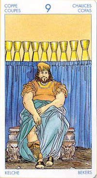

Девятка Кубков
Прямое положение: согласие, довольство, прекрасное самочувствие; также победа, успех, благоприятное положение.
Значение: Как правило, эта карта означает индивидуальный успех – защиту диссертации, завершение какого-либо иного большого и важного дела.
В настоящий момент вы можете переживать период большого счастья и эмоционального удовлетворения.
В целом эта карта указывает на полноценную и отрадную личную жизнь. Очень может быть, что в прошлом вы преодолели немало трудностей и препятствий, но сейчас вы наслаждаетесь теплом тесных взаимоотношений с другими людьми. Но несмотря на то, что успех несет с собой радость и удовлетворение, существует опасность самодовольства, самовосхваления, чрезмерного потакания себе и даже лени, поэтому удостоверьтесь, что вы цените приобретаемый опыт, а также то благословение и счастье, которое дается вам свыше.
Богатство чувств стало фундаментом внутреннего удовлетворения и материального достатка.
"Карта желаний". Исполнение желаний, гармония, победа, слава. Материальный достаток, благоденствие, выигрыш, трофей, энтузиазм.
В перевернутом виде она означает, что успех не за горами, только придется еще немного подождать. В перевернутом положении карта в основном отражает негативное влияние Нептуна: ошибки, несовершенство, болезненное отношение ко всякого рода несовершенству. Вместе с тем, искренность, наивность, простосердечие.